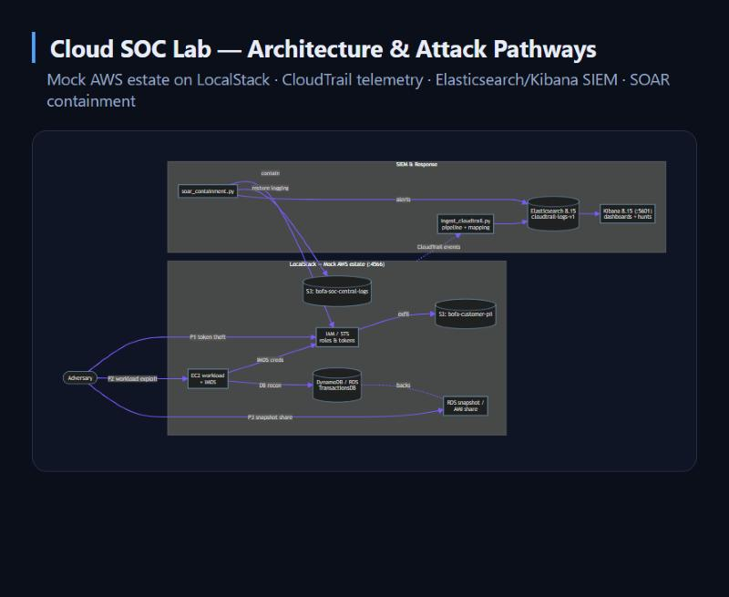
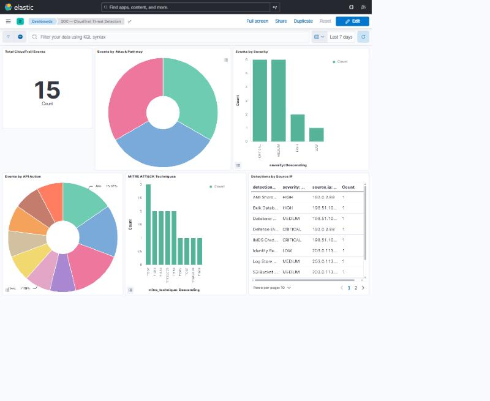
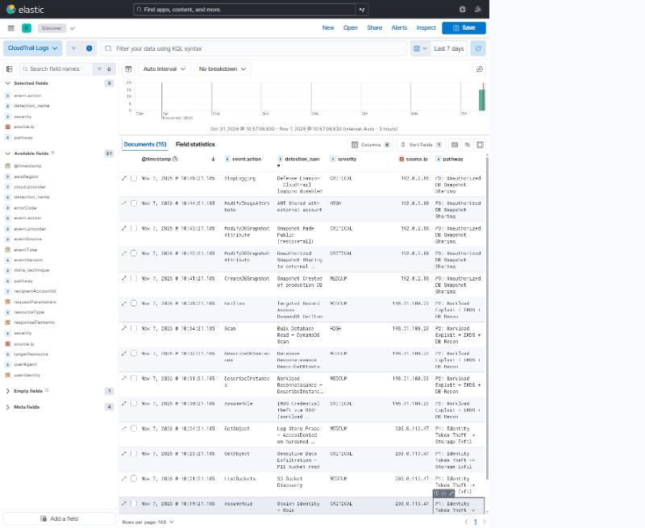
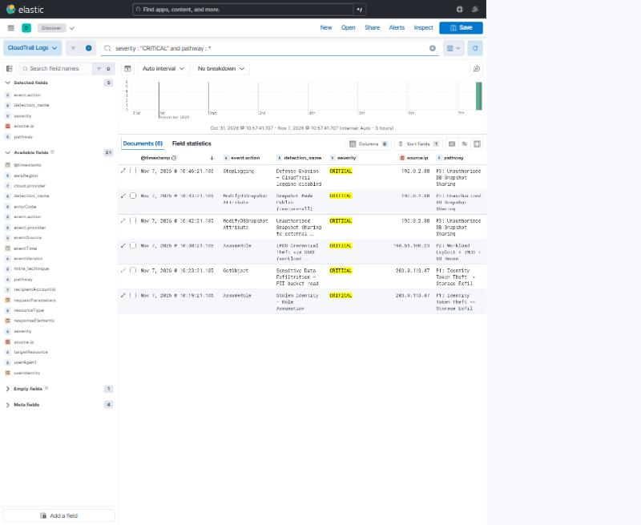

Executive Summary
This lab simulates a multi-stage cloud breach across a mock financial-services AWS environment —
spanning identity (IAM/STS), compute (EC2), storage (S3), and database (DynamoDB/RDS) resources —
then ingests the resulting CloudTrail telemetry into an Elasticsearch/Kibana SIEM and demonstrates
detection and automated containment across three distinct attack pathways. Everything runs locally against
LocalStack — no real AWS account is ever touched. Guard rails in
every script refuse to run unless the endpoint resolves to localhost.
1 · Architecture
The lab models a mock bank's AWS estate across identity, compute, storage, and database tiers on LocalStack. A simulated adversary moves through three attack pathways; every API call is captured as CloudTrail telemetry, normalised by an ingest pipeline, indexed in Elasticsearch, and surfaced for analysts in Kibana, with automated SOAR containment on the response side.
roles & tokens"] EC2["EC2 workload
+ IMDS"] DDB[("DynamoDB / RDS
TransactionsDB")] S3PII[("S3: bofa-customer-pii")] S3LOG[("S3: bofa-soc-central-logs")] SNAP["RDS snapshot /
AMI share"] end subgraph SIEM["SIEM & Response"] ING["ingest_cloudtrail.py
pipeline + mapping"] ES[("Elasticsearch 8.15
cloudtrail-logs-v1")] KB["Kibana 8.15 (:5601)
dashboards + hunts"] SOAR["soar_containment.py"] end ATK -->|P1 token theft| IAM ATK -->|P2 workload exploit| EC2 EC2 -->|IMDS creds| IAM IAM -->|exfil| S3PII EC2 -->|DB recon| DDB ATK -->|P3 snapshot share| SNAP DDB -. backs .- SNAP AWS -. CloudTrail events .-> ING ING --> ES --> KB SOAR -->|contain| IAM SOAR -->|restore logging| S3LOG SOAR -->|alerts| ES
requestParameters, responseElements,
userIdentity). Elasticsearch default dynamic mapping inferred conflicting types
across events and silently dropped documents. The fix maps those volatile sub-objects as
flattened and adds an ingest pipeline that promotes eventTime to
@timestamp, so every event indexes cleanly and is time-filterable in Kibana.
2 · Triage & Detection Walkthroughs
Identity Token Theft to Storage Exfiltration Critical T1552.005 · T1530
Resources crossed: IAM/STS → S3. Source IP
203.0.113.47.
Kill chain: A leaked CI access key runs GetCallerIdentity (recon),
then AssumeRole into FinancialTransactionProcessorRole (session
token-theft). With the stolen token the actor runs ListBuckets, then
GetObject on bofa-customer-pii to pull
exports/cardholder-2026.csv. A probe of the hardened
bofa-soc-central-logs bucket returns AccessDenied — the control held.
Triage & response: Pivot on the stolen accessKeyId across all
services, revoke the session, rotate the leaked key, and confirm the PII read against known-good
access patterns. The AccessDenied on the log bucket evidences the CPS 234 Para 22 public-access
control working.
Workload Exploit, IMDS Theft & DB Recon Critical T1552.005 · T1580 · T1213
Resources crossed: EC2 → IMDS/IAM → EC2/RDS/DynamoDB. Source IP
198.51.100.23.
Kill chain: An exploited web workload harvests instance credentials via the
metadata service — AssumeRole invokedBy ec2.amazonaws.com into
EC2-Web-InstanceRole. Those creds drive reconnaissance: DescribeInstances,
DescribeDBInstances, then a bulk Scan of TransactionsDB
(48k records) and a targeted GetItem on a VIP account.
Triage & response: Credentials used from an IP outside the instance's own
egress are the tell. Quarantine the instance, revoke the role session, enforce IMDSv2
(hop-limit 1), and alert on any DynamoDB Scan from an instance-profile principal.
Unauthorized DB Snapshot Sharing Critical T1537 · T1562.008
Resources crossed: RDS/EC2 → external AWS account. Source IP
192.0.2.88.
Kill chain: The actor takes CreateDBSnapshot of
bank-core-db, then ModifyDBSnapshotAttribute to share
bank-core-db-exfil with external account 999988887777 — and again with
all (public). A workload AMI is shared out via
ModifyImageAttribute, and finally StopLogging disables CloudTrail to
blind the audit trail.
Triage & response: Any snapshot/AMI attribute change adding an unknown
account or all is a data-exfiltration event — revoke the share immediately, delete the
rogue snapshot, and treat StopLogging as a high-severity evasion signal.
soar_containment.py auto-restores logging and emits the alert.
3 · KQL Threat-Hunting Queries (Kibana)
Run these in Kibana → Discover against the cloudtrail-logs-* data view.
P1 · Stolen identity exfiltrating PII
event.action : "GetObject" and requestParameters.bucketName : "bofa-customer-pii" and userIdentity.type : "AssumedRole"
P2 · IMDS credential theft from workload
event.action : "AssumeRole" and userIdentity.invokedBy : "ec2.amazonaws.com" and not source.ip : 10.0.0.0/8
P2 · Bulk database reconnaissance
eventSource : "dynamodb.amazonaws.com"
and event.action : ("Scan" or "DescribeTable")
P3 · Snapshot / AMI shared externally
event.action : ("ModifyDBSnapshotAttribute" or "ModifyImageAttribute")
and (requestParameters.valuesToAdd : "all"
or requestParameters.attributeName : "restore")
Cross-pathway · Critical events only
severity : "CRITICAL"
Defense evasion (log tampering)
event.action : ("StopLogging" or "DeleteTrail")
and eventSource : "cloudtrail.amazonaws.com"
4 · SIEM Detection Panels
Key detections across the three pathways
| Pathway | Detection | MITRE | Severity | Source IP |
|---|---|---|---|---|
| P1 | Stolen Identity — Role Assumption | T1552.005 | Critical | 203.0.113.47 |
| P1 | Sensitive Data Exfiltration — PII bucket read | T1530 | Critical | 203.0.113.47 |
| P2 | IMDS Credential Theft via SSRF | T1552.005 | Critical | 198.51.100.23 |
| P2 | Bulk Database Read — DynamoDB Scan | T1213 | High | 198.51.100.23 |
| P3 | Unauthorized Snapshot Sharing (external acct) | T1537 | Critical | 192.0.2.88 |
| P3 | Snapshot Made Public (restore=all) | T1537 | Critical | 192.0.2.88 |
| P3 | Defense Evasion — CloudTrail disabled | T1562.008 | Critical | 192.0.2.88 |
5 · Live Implementation & Screenshots
The screenshots below are from my running deployment of this lab — a live Elasticsearch/Kibana SIEM with LocalStack, showing the ingested CloudTrail telemetry and the dashboards I built on top of it.
Accessing the live Kibana
While the Docker stack is running, the SIEM and dashboards are reachable locally:
Kibana: http://localhost:5601
Dashboard: http://localhost:5601/app/dashboards#/view/soc-cloudtrail-dashboard
Data view: cloudtrail-logs-* (time field @timestamp)
Run docker compose up -d then
python ingest_cloudtrail.py and python create_dashboards.py to recreate
the SIEM, data, and dashboards from scratch.



event.action, detection_name, severity,
source.ip, pathway).
6 · Reproduce the Lab
# 1. Bring up the stack (Elasticsearch, Kibana, LocalStack) docker compose up -d # 2. Provision mock AWS resources on LocalStack python bofa_lab_setup.py # 3. Simulate the P1 breach, then run automated containment python simulate_p1_breach.py python soar_containment.py # 4. Ingest CloudTrail telemetry into the SIEM (creates pipeline + mapping) python ingest_cloudtrail.py # 5. Confirm logs are indexed curl http://localhost:9200/cloudtrail-logs-v1/_count # 6. Build the Kibana data view + dashboards python create_dashboards.py # 7. Open Kibana and hunt open http://localhost:5601/app/dashboards#/view/soc-cloudtrail-dashboard